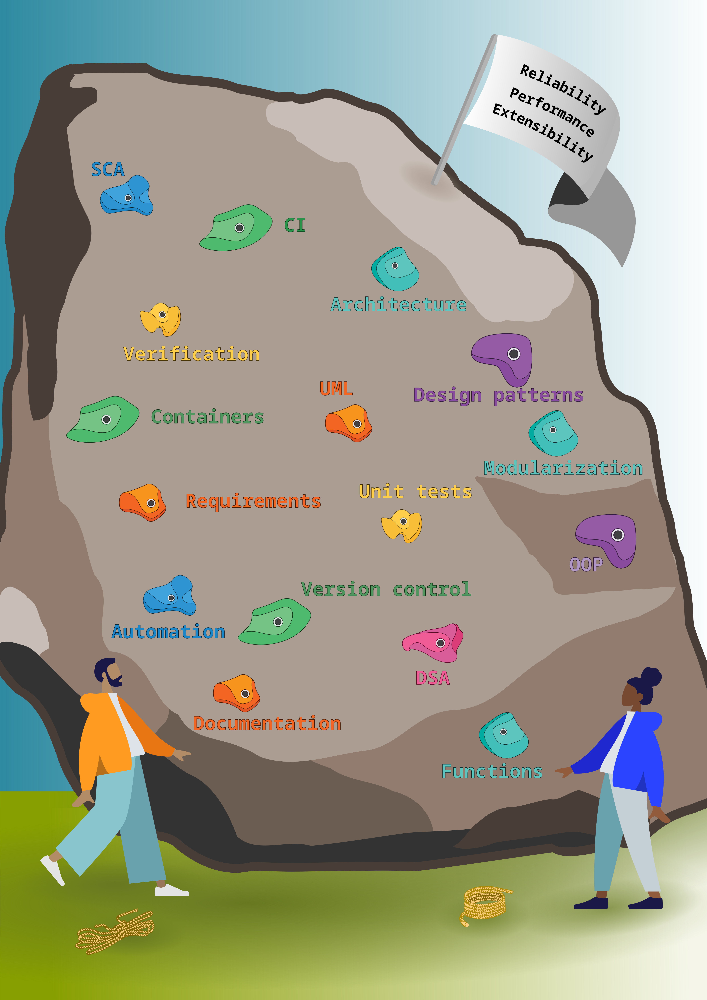

Katalin Ferenc✉ 0000-0002-3006-4297
· ferenckata
Centre for Molecular Medicine Norway (NCMM), Nordic EMBL Partnership, University of Oslo, 0318 Oslo, Norway
Ieva Rauluseviciute 0000-0001-9253-8825
· ievarau
Centre for Molecular Medicine Norway (NCMM), Nordic EMBL Partnership, University of Oslo, 0318 Oslo, Norway
Ladislav Hovan 0000-0001-8847-9295
· ladislav-hovan
Centre for Molecular Medicine Norway (NCMM), Nordic EMBL Partnership, University of Oslo, 0318 Oslo, Norway
Vipin Kumar
· princeps091-binf
Centre for Molecular Medicine Norway (NCMM), Nordic EMBL Partnership, University of Oslo, 0318 Oslo, Norway
Marieke Kuijjer 0000-0001-6280-3130
Centre for Molecular Medicine Norway (NCMM), Nordic EMBL Partnership, University of Oslo, 0318 Oslo, Norway
Anthony Mathelier✉ 0000-0001-5127-5459
Centre for Molecular Medicine Norway (NCMM), Nordic EMBL Partnership, University of Oslo, 0318 Oslo, Norway; Department of Medical Genetics, Institute of Clinical Medicine, University of Oslo and Oslo University Hospital, Oslo, Norway
✉ — Correspondence possible via GitHub Issues
or email to
Katalin Ferenc <k.t.ferenc@ncmm.uio.no>,
Anthony Mathelier <anthony.mathelier@ncmm.uio.no>.
Abstract
Ever since the high-throughput techniques became a staple in science laboratories, the generation of computational algorithms and scientific software boomed.
However, it has been noted that scientific software, and specifically bioinformatics software, lacks the quality standards of software development.
The consequence of this is code hard to test (or independently verify), reuse, and maintain.
We believe the root of inefficiency in implementing the best software development practices in the academic settings is the individualistic approach, which has traditionally been the norm for recognition of scientific achievements and by extension for software development.
Software development is a collective effort in most software-heavy endeavours.
The literature suggests that team work directly impacts code quality through knowledge sharing, collective software development, and established coding standards.
In our computational biology research groups, we explored ways to sustainably involve all group members in learning, sharing, and discussing software, while maintaining the personal ownership of research projects and related software products.
We found that through weekly meetings, within a year, regular members improved their coding skills, became more efficient bioinformaticians, and obtained a detailed knowledge about the work of their peers.
Through within-group knowledge transfer, each member obtained knowledge about advanced concepts without investing significant amount of time.
We can now quickly identify and access the expertise of each other, and we established standards to which new members are also required to comply.
We advocate for improvement of software development culture within bioinformatics through local collective effort in computational biology groups or institutes with 3 or more bioinformaticians.
Our three pillars of improving coding culture are: 1 - software quality seminars, 2 - code reviews, and 3 - resource sharing.
Introduction
Bioinformatics and computational biology are indispensable components of research in biology.
About 90% of researchers rely on results produced by scientific software [1].
In turn, scientists are heavily relying on inventions of computer science and software engineering, such as programming languages, programming paradigms, or container solutions.
However, adopting practices from other fields is not without difficulties and scientific software development tends to lag behind.
One implication of using outdated or poor software engineering practices is that incorrect software results in invalid scientific findings [1,2].
Beyond that, even when the software performs as intended, researchers spend significant amount of time on software building using suboptimal practices which can further increase the necessary time investment in the future [3,4,5].
Good software development practices (e.g. pair programming, code reviews) have been established in other software-heavy endeavours to mitigate the risk of incorrect software solutions and save development time in the long run.
However, bioinformaticians or more generally scientists working with scientific software often lack formal education in computer science or software development [2,6,7].
This hinders the adoption of good coding practices (e.g. unit tests, continuous integration).
In addition, historically research projects are often carried by a single trainee and are part of academic degree evaluation.
Thus, software developed for a particular project is mostly limited to the skills of an individual person, does not follow many software development guidelines, and can remain poorly maintained after the end of the project [7,8,9,10].
One way to expand the knowledge and application of good software quality practices is to rely on people around and make use of redundancy of the knowledge.
We suggest that software development practices, such as code reviews, can be repurposed as learning opportunities.
Currently, a team is perceived differently in research-oriented environments compared to the software development projects.
In research groups, members of the group discuss and help each other with scientific suggestions, but most often a single person is designing and implementing the code base to answer scientific questions.
Without shared standards, the available guidelines on coding practices are only suggestive and often anecdotal.
As following or ignoring these guidelines is up to individual judgment, the actual craft of software engineering is often treated as an afterthought.
However, when software is developed by multiple group members, researchers tend to appreciate software engineering concepts [6].
High-profile code bases often feature larger development teams and their activities indicates better communication and documentation of the software [9].
To summarize, systematic adoption of team coding practices homogenizes software engineering competence of individuals across the research group and contributes to the dynamism of the research environment.
We hypothesize that a form of team structure organized around individual software products could improve the quality of our scientific code.
According to the literature, we expected an increased validity and reproducibility of scientific findings, as well as better maintenance of our computational resources for the community [11,12].
In this work we first review relevant literature on the individual and team coding practices that are currently suggested within and outside scientific research groups.
To overcome the obstacles limiting researchers to adopt good practices, we present our groups’ approach, where in a team setting we learn, teach, and apply concepts to improve the quality of our software products.
We have created weekly meetings and code review sessions where group members discuss aspects of software quality relevant for computational biology and show their own code for the rest of the group to discuss and review.
We suggest that our team-based activities result in shared standards and an overall better code quality of the members with a reduced effort on an individual level.
Furthermore, we provide a framework on how to get started with collective software development by directly or indirectly involving all bioinformatician group members, with or without formal training in software engineering.
Overview of currently suggested coding practices for bioinformaticians
The current coding practices in the field of bioinformatics is extremely variable and depends on many factors including the background of individual scientists, and the research field they are in.
However, it has generally been noted wrote that most scientific computations keep on being performed using error-prone development practices and reaching suboptimal solutions and poor software quality due to lack of appropriate software engineering practices [13].
In the past two decades, limitations and caveats of scientific software development practices and products has been surveyed and discussed by software engineering researchers [1,3,6,10,14].
For bioinformaticians who are self-taught programmers, the online learning and support resources are vital.
These include blog posts from peers, open-source lecture materials from universities, and forums.
There are also articles that propose guidelines on how to code or analyse data in a better way.
The encouraged practices are plenty, however they vary a lot and do not necessarily include a consistent view in line with the mainstream software standards.
For a general overview, we selected articles (Supplementary Methods) which would be the entry point for bioinformatician who aim to improve their programming skills and collected their suggestions in Table 1.
Many of these papers focus on specific suggestions, often referred to as rules or “tips & tricks”.
Others, as a form of guideline, direct the readers towards good practices of coding.
While the targets of these type of articles are early career researchers with minimal coding experience (e.g. first time terminal users), they also encourage the usage of state-of-the-art software solutions (e.g. containers).
Therefore, their guidelines are often a mix of basic and advanced concepts, especially from the perspective of a standard computer science and software engineering curriculum.
This highlights the unique challenges emerging in bioinformatics even for routine analyses.
The first impression Table 1 might give is being intimidating due to the sheer amount of recommendations.
Many of these guidelines are struggling to establish themselves within the bioinformatics community [2].
We note that the characteristically varied backgrounds among bioinformaticians adds to the challenge of establishing broadly adopted and effective standards.
These difficulties prompts us to re-think our strategies and methods to realize the effective adoption of these guidelines.
More specifically, our own experience indicated a greater likelihood of adoption for these notions when engaged as part of a collective effort towards better software engineering proficiency.
Updating development practices, or even gaining a good understanding of new concepts is not a trivial task.
Beyond understanding, Arvanitou et al. note that a scientific software developer, depending on the application of the software (e.g. whether it is a tool or a data analysis pipeline), needs to make choices among the good practices [3].
The authors argue that selection can be done via the prioritization of software quality attributes [15].
Due to the trade-offs between these attributes (e.g. performance vs security), priorities needs to be set for each software product.
As bioinformaticians are rarely familiar with the meaning and importance of these attributes [17], we list these attributes and provide short descriptions for them in the Supplementary Materials.
Some, such as functional suitability and performance are implicitly prioritized within bioinformatics.
Others, such as maintainability, portability, and reliability, are neglected in most bioinformatics endeavour.
Through implicit prioritization most software are developed as a prototype, even when the goal is to create a long-term product.
Therefore, we decided to set three target quality attributes as our learning goals that we have neglected in the past: reliability, performance, and extensibility (Figure 1).
The hardship of systematic, automated testing of scientific software has been discussed in detail [1,16,17].
Uncovered faults can and do lead to incorrect scientific insights as shown in multiple examples [18], which prompted us to investigate this issue further.
Often in science we use software to find new knowledge and do not know a priori the exact output a software should give for a new input dataset.
Furthermore, according to the Kanewala and Bieman [17], scientists view their scientific model and the implementation as a single entity.
Therefore, scientists tend to test the validity of the model but not verify the code which produces it.
In our sessions, we covered unit testing and discussed verification for scientific software (Figure 1).
Another insight is about the complexity of bioinformatics software.
In bioinformatics analysis it is common to combine the functionalities that are coming from various packages.
This has several implications [1,3,7,8], here we highlight two of them.
First, over time the software becomes increasingly hard to maintain.
The complexity, size, age, and the change-proneness of a code heavily affect maintainability [14].
To address this question, we built a shared understanding of functions and modularization (Figure 1), and expect the members of our code reviews to organize their code into modules.
Second, package management (including versioning) is a crucial aspect to ensure not only maintenance, but also ease of development, reproducibility, and reusability.
Frameworks [19,20] and package management solutions [21,22,23] are required to achieve these qualities.
Similarly to modularization, we first learnt about version control and container solutions (Figure 1), so that we can expect members to follow these practices.
Interestingly, throughout our literature review we found only one instance of suggestions on how to code in a team setting and utilize multiple people’s expertise on software development.
Often guidelines for starting bioinformaticians encourage reaching out to others, but mostly to seek help when encountering a problem with their code.
This could include consulting with colleagues, finding a mentor or participating in online communities (for example, Stack Overflow or Biostars) [24].
However, it is still mainly focused on individual practices, called upon a specific (often scientific) issue, and insufficient to recognize unknown unknowns.
The one counter example is the Code Clubs described by Hagan et al. [25].
In their research group, members are collectively engaged in software development through code reviews, pair coding, and software engineering education through workshops or seminars [25].
It is in contrary to software engineering-oriented literature, where the main focus is on practices when coding in a team [26,27].
Sharing your coding experience with others helps minimize the isolation, allows individuals to learn from their peers, helps to establish and maintain standards, and helps to write a better quality software.
We therefore established a learning club called software quality seminars, regular code reviews, and a resource sharing platform to foster team effort (Figure 1).
In a later section (Our experience of development processes involving teams) we will illustrate with concrete examples how notions like modularization, testing, and container solutions got incorporated in our daily software development practices and thinking through regular instances of collective learning.
But first let us turn to the dedicated literature for team-based software development to demonstrate the merit of a collective approach to software development.
Table 1:Collection of recommendations for improving scientific software quality. Some guidelines are more vague than others, they also have varied scope, and they target different stakeholders. Therefore, it may be hard to find individual responsibility and actionable points from the literature.

Figure 1:An illustration comparing the process of improvement in software writing to rock climbing.
DSA: data structures and algorithms, OOP: object-oriented programming, UML: Unified Modelling Language, CI: continuous integration, SCA: static code analysis
Coding in teams
Beyond the brief mention of getting support in the guidelines for bioinformaticians, specialized literature exists that examines how to effectively organize coding activities in a team.
Programming as a collective practice is a key notion in software engineering.
A central theme in this literature is maximizing team cohesion while minimizing code coupling [29].
From perspective of the code, adoption of sound software design enforcing modularity and extensibility ensures the viability of a software project [30].
From the perspective of the development, team management practices centred around communication and collective governance are preferred [30].
In general, we understand management as performing a set of tasks: planning, monitoring resources, and tracking progression [31].
Typically, the oversight of these functions would be taken up by a single individual referred to as the “manager” of a project, where manager is a role rather than a title of a particular person.
In the particular context of computational projects in academia, a strict division of labour is rarely found in regard to the management of software projects.
Some tasks, such as risk, budget and time management, are discussed at the conception of the project (e.g. during grant application) and thus decoupled from the actual software development phase.
The remaining management tasks would often fall on the developer(s).
Implicit decision making is one of the key challenges current bioinformatics projects face.
As agile is the only recommendation about team management present in these guidelines (Table 1), we discuss it here in light of the current academic practices.
Through more team communication, one outstanding aim of agile is the aspiration for more autonomy in organizing the work of software developers.
Practices and methods aligned with agile prescriptions include planning a minimum viable product, documenting requirements, organizing stand-up meetings, defining and assigning tasks, pair-programming, and code reviews.
Many of these practices do not require the presence of the manager, but assume a collegial work culture and standardized procedures.
The additional overhead in terms of time and resources needed when developing is offset by the aforementioned benefits in terms of software resilience and improved team capabilities.
Incentivizing a collective ownership and governance of the codebase as a whole, promotes the adoption of software engineering best practices among developers contributing to a software project [32].
Indeed, by aspiring to make any developer within the team interchangeable across the various ongoing tasks, we create the need for robust testing, comprehensive documentation and coherence across the difference parts of the project [29].
Furthermore, by exposing every developer to a variety of tasks over the course of the project development, we strengthen the knowledge and skill base of the team as a whole, as well as create a better mutual awareness of team member expertise.
This mutual awareness is known as transactive memory system, and has been linked to increased team performance [33].
Taken together these merits further improve the team’s capacity to overcome technical challenges that will arise over the course of the development process.
We do not believe that all the software engineering guidelines employed in the industry are necessarily relevant to the production of scientific software.
The circumstances differ significantly, mainly due to how the outcomes of research projects (papers, tools, protocoles, etc.) need to be credited to paricular individual researchers for their career progression.
Regardless of the optimality of this situation, personal projects remain the norm, and it would be futile to expect another group member to achieve an equal level of familiarity with one’s project.
However, this should not prevent interactions between the people in the group, as it is through these interactions that rules are enforced and quality increased.
In our research groups, we have practically implemented the environment in which we, as a group, learn about and implement software quality practices that have been discussed in literature.
We want to share this experience and propose how simple additions, such as weekly code review sessions or seminars, can lead to the improved quality of collective or personal software.
Our experience of development processes involving teams
In our professional careers, we have experienced hardships with scientific software - both from the user and from the developer’s perspective.
We have seen a variety of suggestions in the literature aiming to improve the status of bioinformatics software.
We recognized that for a single person achieving a good understanding of them all, and subsequently prioritizing, and adopting them would require a substantial amount of time.
Even basic software development standards (e.g. standardized environment, independent review of source code) might seem out of scope and impossible to implement for a single researcher.
On the other hand, we also have seen that the industry standard approach heavily relies on a team structure and team management.
Therefore, within our groups, we aimed to create a system where the individual scientific software projects are supported through collective learning, understanding, and discussions.
In order to illustrate our thinking with regards to improvement in software writing, we compare it to the exercise of rock-climbing (Figure 1).
At the top of the rock is our goal of good quality software.
Specifically, we identified reliable, performant, and extensible software as our aim, as we wished to improve our skills in creating and maintaining a lasting piece of software as is the scope of our teams [11,12].
In order to reach it, we need to become proficient in the various concepts depicted by the holds.
These concepts were selected from the literature and our professional experience, but are not exhaustive and can be tailored to the specific needs of each group.
The higher they are on the wall, the more advanced we consider the concepts to be.
As the progress is cummulative, we have chosen to show the holds in the same colour if they represent related concepts that build upon each other.
This way, we mimic traditional CS education.
The most important point, however, is the fact that rock climbing requires a partner to belay you, just as we believe the input of other people helps us become better programmers.
The software development practices that we have adopted can be broadly separated into three categories: 1 - software quality seminars, 2 - code reviews, and 3 - resource sharing.
Within the framework of software quality seminars, we have established a large-scale knowledge transfer system between the participants.
Presentations and demonstrations of basic concepts, new techniques and tools that are not necessarily tied to a specific project help broaden our knowledge base and awareness.
In this sense, they form almost a substitute for a more formal computer science education, which most bioinformaticians lack [2].
Through these sessions we built a shared vocabulary that enables quick discussions about implementation details and code structures.
We also gained awareness of packages or technical solutions, which help improving software performance and quality.
The benefits of code reviews have been reviewed in the past [36].
Prior to a scheduled code review, the author is expected to write their code in a way that it will be explainable and understood by others.
This expectation is largely self-inflicted as each person feel the pressure of exposing their weaknesses - even within a friendly environment.
During the code review, the author has to explain some aspect of their code clearly (e.g. structure, algorithm implementation, performance related decisions).
In our settings, it is entirely up to the author to choose which aspect of the code, or software product to discuss.
Although it is implied that participants of code reviews are intended to discuss implementation details, we accept and enjoy discussions about any other aspect of the code, such as user interface design, documentation, or architecture considerations.
The other participants may not be deeply familiar with the particular project, but they have their unique knowledge and point of view.
The feedback obtained can help fix existing or potential future issues, improve the implementation, and produce cleaner, more concise code.
Our experience indicates a broader adoption of theoretical aspects and good practices of software engineering highlighted during these code review sessions.
We found that during these meetings implicit peer-pressure helps us achieve most goals: standardization of practices, improved code quality, and enhanced usability of the software.
As a positive additional outcome, we noticed an increasing understanding in each other’s projects that naturally emerged through talking about the examined code.
This enabled us to give more involved comments during subsequent group meetings too, where we would naturally discuss each other’s scientific projects.
Additionally, seeing and analysing everyone’s code on a more hands-on level showed us how repetitive some pieces of code can be in different projects.
This redundancy can be removed by implementing a system to share resources.
Resource sharing boils down to making sure that useful online resources are brought to the attention of all participants easily.
It can be discussed from two perspectives: external open-access resources (forums, repositories, packages and libraries) and internal (within-group resources with tools).
The latter is very important as it allows for team contribution that can benefit the individual project development.
A simple example of this could be a shared repository of various computational tools that were developed by members of the group.
Such tools are universal enough and fit the group’s research questions, so all people in the group can re-use them.
In addition, each tool can be potentially developed and reviewed by multiple group members.
We believe these three pillars are the minimum requirement for achieving lasting improvement in software development within research teams, but bioinformaticians of other groups should tailor the content and the frequency of these meetings to their specific needs.
Although not explicitly a project conceived during the meetings, many regular attendees have extensively applied software quality features (object-oriented programming style, user stories when documenting the requirements and assumptions, Jira to add features and report bugs, continuous integration with Git) when working on the same codebase as a team for the latest release of JASPAR database [11].
We also want to note that this article in fact was successfully written using a continuous integration based tool Manubot [37].
In the next sections we discuss how software quality seminars and code reviews helped with three specific software enginnering notions: modularization, testing, and dependency management.
Modularization
The first example we give is the shift in our work towards increased modularization.
We understood from the guidelines and experiences from within the team that moving from unstructured scripts to organized code with functions brings several benefits at a low cost.
Understanding the ways we can improve code organization was a theme we touched several times during the software quality seminars.
In parallel, during code reviews we encountered and discussed several examples where modularization was implemented.
Our toolkit collects stand-alone scripts that are by definition modules to be used.
We covered the following topics in lecture forms to gain understanding in ways to improve modularization: object-oriented programming, class diagrams and unified modelling language in general, design patterns, software architecture, Snakemake [19], S4 objects, R package development, a case report from the organization of the JASPAR database project [11], and a review on the book titled The Pragmatic Programmer [38].
We understood that modularization can take form in many levels.
On the smallest scale it can mean naming parts of the code by organizing them into functions.
Once a code grew, we can start refactoring into classes and focus on the coherence and coupling of the parts.
When building a pipeline of scripts, we can identify coherent modules that would translate to rules in Snakemake [19].
To sum up, modularization means the continuous monitoring of the code, the recognition of a code that grew too much, and the re-structuring into smaller parts.
It involves an understanding that the code is not a static entity, but an ever-growing, ever-changing organism.
In a large distributed project clean coding style may be trivial, but because the bioinformatic projects are often handled by a single person, it is very possible to make the code complex and obfuscated.
We observed in code reviews that during data analysis parts of the code are re-run in an ad-hoc manner (e.g. by commenting out or re-writing parts), making it increasingly difficult to explain the code or reproduce the same analysis.
At the start of implementation of regular meetings, the recurring comments were about modularization, documentation, and variable declarations, until these became standard among the members.
After about half a year, it was established understanding for everyone involved that code organized into functions is preferred over the so-called “spaghetti code”.
A recurring question is whether a script needs refactoring or can remain a prototype.
Taschuk and Wilson [7] suggest a cut-off where a script is being reused, shared with others or used to produce findings in a publication.
This definition would potentially include the majority of code written by bioinformaticians, but the time spent on improving the scripts should be weighed against the time required to deal with suboptimal code.
Testing
As highlighted in the literature [17], testing is a difficult concept for scientific software.
We revisited testing multiple times: discussed debugging tools, how to write unit tests in python (pytest and unittest) and R (testthat), what type of functions can be tested, why automated tests are beneficial and how to implement them via continuous integration services (e.g. GitHub Actions).
The main difficulty was for us to see testing as software testing beyond the validation of the scientific feature of the software that can be shown on a small test data.
Similarly to modularization, a recurring question was when to start adding tests.
Although there is no hard threshold, we tend to identify a sweet spot when the code has not grown too much so that refactoring is a daunting task, but also not changing too much so that test coverage would be a wasted effort.
In general, we advise on testing earlier than one would feel like (i.e. I will start tomorrow after I implement this new idea).
Code reviews are a very nice platform to discuss tests: to get the input from peers on how to challenge the implementation.
This part is actually a scientific endevour, when edge cases can be thought of and the properties of the biological question can be discussed.
Dependency management
Given the large number of dependencies, even whole ecosystems of tools, dependency management is one of the most important task to ensure reproducibility of the findings.
In the software quality seminars we covered: container solutions [22,23], R package development, and Anaconda [doi:https://www.anaconda.com?/].
We established the DockerHub account for our group [39] to share our custom containers.
This resource also enables easy installation of our Snakemake pipelines across different servers.
In sum, software quality seminars, code reviews and shared resources in the research group can be implemented as separate activities choosing all or any of them.
We observed that even a single activity is benefiting members’ coding experience and the resulting code quality.
Overall, as good practices become routine, the required time investment will be reduced and the benefits will become more apparent.
The shared knowledge base and standards also allow us to make new group members adopt good coding practices more quickly.
Conclusions and future perspectives
Software engineering emerged and has been developing to address issues naturally arising from poorly planned software development, such as project failures, delays, incorrect functionality or defects [40], none of which is unknown to the scientific community.
Indeed, the crisis of scientific software in general is widely discussed [41,42].
It is only natural that the bioinformatics community learns from those more experienced, and focuses on solving problems that have been identified.
In this case, it is both the software engineering research community and the industry experts on software and team management.
In our computational biology groups, we introduced regular seminars to learn about software solutions, and code reviews that fit our specific needs and context.
Through these meetings, we learnt about and adopted various concepts that achieve a better quality software (Supplementary Material).
Furthermore, we have established coding standards within our groups, which ease within-group support and collaborative projects.
We note that the usage of these tools is not necessarily aligned with industry practices, due to the experimental nature of scientific software.
Nevertheless, as bioinformatics becomes a more and more software-heavy field, we believe a good direction is to collectively lower the barrier to adapting to new technologies.
For large software project which supports many researchers and contributes to novel findings, working in team and following standards is a necessity and not an option.
While this may not be necessary for smaller projects, we argue that following good software quality practices is still very beneficial.
If single-person projects survive the original developer, deposited on platforms like GitHub, they might be overly cryptic and poorly documented so that no other scientist can take over [43].
Over time a project might be taken over by another person, thus accidentally becoming a sort of team project with (by definition) insufficient communication.
Lack of standards and good practices thus undermine maturation, addition of new features, and general maintainability.
When discussing our approach, it is implied that team dynamic is important, especially for such bottom-up approaches.
The overall performance increases when team members are familiar with each other and build problem-solving routines together through cumulative experience [29].
In a group the knowledge on who knows what speeds up the problem-solving [33]; time spent together and social factors ease technical knowledge transfer [29].
We therefore motivate group leaders of groups with even a small computational component to build an environment for their trainees to communicate and discuss software quality aspects.
We envision a future where scientific software for core applications is appreciated, reliable, and actively maintained.
All scientists would benefit from a strong backbone of software solutions, that would support quick and efficient prototyping, as well as maturation of working solutions.
The lack of funding for the maintenance of software, prevents achieving a level of software quality that would inspire confidence in the results [1].
Funding is typically provided for the development of novel software, and it can be hard to justify spending time on maintenance which provides no output in terms of articles.
Currently, as Alexander Szalay puts it “the funding stops when they [researchers] actually develop the software prototype” [43].
Researchers want to build on each other’s findings, use published novel software as tools, but they might need to spend quite some time adopting or maintaining that software [1,3,7].
The infrastructure would benefit from funding earmarked for maintenance, and from dedicating time to it in project proposals.
Fortunately in recent years, the lack of funding is being recognized and addressed by a few agencies, such as the Chan Zuckerberg Initiative Essential Open Source Software for Science fund [44].
Scientific community and funding agencies should welcome the efforts of maintaining original software and encourage its updates instead of the development of a replacement software that risks remaining unmaintained.
To summarise, today it is important for the scientific community to recognize the limitations of the software we are producing.
This includes acknowledging the flaws in the process of coding.
As a potential great improvement we propose organizing activities, such as software quality and code review seminars, that would involve the whole research group in each other’s projects, therefore allowing the sharing of knowledge and feedback on the code practically.
We also advocate for sustainable funding for the maintenance of existing and newly developed scientific software.
Acknowledgements
The authors would like to acknowledge the helpful feedback on an early version of the manuscript provided by Ine Bonthuis, Nolan Newman, and Romana Pop.
We would also like to acknowledge the contributions made by all the participants of our code reviews and software quality seminars.
JASPAR 2024: 20th anniversary of the open-access database of transcription factor binding profiles
Ieva Rauluseviciute, Rafael Riudavets-Puig, Romain Blanc-Mathieu, Jaime A Castro-Mondragon, Katalin Ferenc, Vipin Kumar, Roza Berhanu Lemma, Jérémy Lucas, Jeanne Chèneby, Damir Baranasic, … Anthony Mathelier
The Network Zoo: a multilingual package for the inference and analysis of gene regulatory networks
Marouen Ben Guebila, Tian Wang, Camila M Lopes-Ramos, Viola Fanfani, Des Weighill, Rebekka Burkholz, Daniel Schlauch, Joseph N Paulson, Michael Altenbuchinger, Katherine H Shutta, … John Quackenbush
Felix Mölder, Kim Philipp Jablonski, Brice Letcher, Michael B Hall, Christopher H Tomkins-Tinch, Vanessa Sochat, Jan Forster, Soohyun Lee, Sven O Twardziok, Alexander Kanitz, … Johannes Köster
Ten simple rules to increase computational skills among biologists with Code Clubs
Ada K Hagan, Nicholas A Lesniak, Marcy J Balunas, Lucas Bishop, William L Close, Matthew D Doherty, Amanda G Elmore, Kaitlin J Flynn, Geoffrey D Hannigan, Charlie C Koumpouras, … Patrick D Schloss